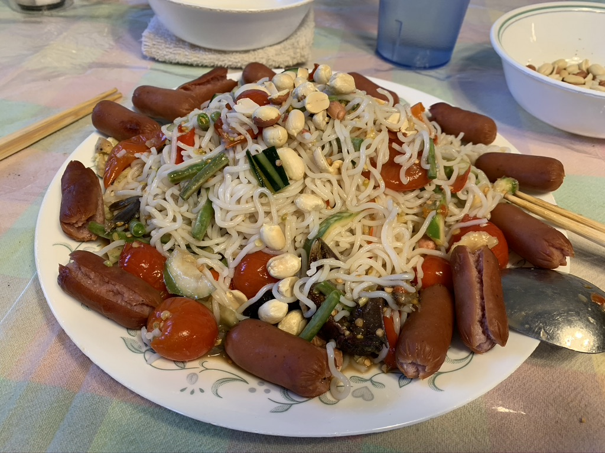

Article
This is a Paragraph tell me some really cool story I like to write random things about tacos even though we donw make tacos 1. So much so is the priority of food for Thai people that whenever you meet some Thai person, the first thing they will say is “Gin Khao Yung” meaning – have you eaten yet! 2. Thai cuisine is very popular in western world. In fact, two Thai dishes – Pad Thai (stir-fried noodles) and Tom Yum Goong (Spicy and Sour Shrimp soup) – are available in every corner of the world. 3. The way Thai people dine and eat food at restaurants is also very different. Generally, they prefer to order the same number of dishes as people present. But that doesn’t mean one person eats his or her chosen dish only. In fact, Thai culture treats eating alone as a bad luck gesture. All dishes are shared and enjoyed together, always. 4. Thai cuisine is a perfect blend of four seasonings – salty, sweet, sour, and spicy. Almost every Thai dish combines all four tastes. Thai cuisine lays a lot of importance to fresh fruits and vegetables which is very much evident in their curries and every desserts that come loaded with fruits. 5. Generally, Thai take a very wholesome breakfast that includes Joke, which is rice porridge with pork. Kai Jee-o (omelette) and Khao Mun Kai (chicken and rice) are other popular breakfast options. 6. The whole world knows about Pad Thai but not as much about Pad Mama which is fried noodle with beef and vegetables. 7. A recent survey done by the Office of the National Culture Commission reported the top ten Thai dishes best liked by foreigners which includes Tom Yam Kung, Kaeng Khiao Wan Kai (Green chicken curry) and Pad Thai in top three places. 8. And this one will definitely amuse you – Thai people do not prefer to eat with chopsticks! They use a fork and a spoon to eat. 9. Thai desserts are unique as they are made of coconut flesh, coconut cream and rice flour rather than cream or wheat flour.